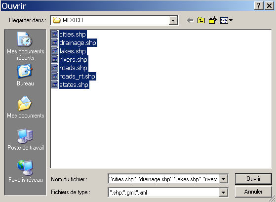
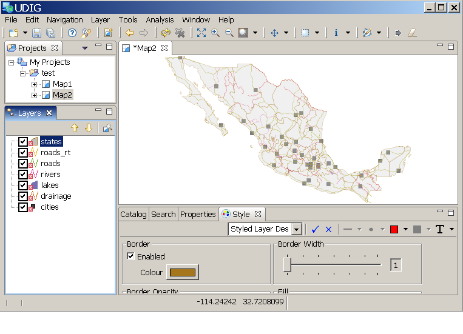

Importieren eines Shapefiles
Importieren eines Shapefiles
- Man kann ein Shapefile auf eine der folgenden Arten importieren:
- Klicken Sie auf die linkeste Schaltfläche der Symbolleiste ODER
- Wählen Sie aus dem Menü Layer > Add ODER
- Wählen Sie im Dateimenü Datei > Neu > Layer.
- Wählen Sie im Hinzufügen-Assistenten "Dateien"
 aus.
aus.
- Wählen Sie einige Shapefile aus und klicken Sie auf "Öffnen"

Die importierten Shapefiles werden nun im Karteneditor angezeigt.

(c) Copyright (c) 2004-2008 Refractions Research Inc. and others.